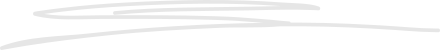

Conheça o Projeto Mi & Au
A Associação Protetora Projeto Mi & Au foi fundada em 25 de fevereiro de 2013 por Eduardo Seype Passaglia. O Abrigo acolhe cães e gatos em situação de risco, vítimas de abandono ou maus-tratos. Quando um animal chega aqui, tem quaisquer doenças tratadas, é vacinado, castrado e, após esses processos, fica disponível para adoção. Atualmente, em torno de 900 bichos vivem no Abrigo, cerca de 600 cães e 300 gatos. Ajudamos, ainda, aproximadamente 100 famílias carentes com os cuidados de seus bichinhos, fornecendo castração, ração e tratamento de doenças. O consumo mensal (aproximado) de ração é de 7 toneladas por mês para os cachorros e 2 toneladas por mês para os gatos. Além dessas despesas, o Abrigo também precisa de recursos para idas ao veterinário, medicação, castração, vacinação e produtos de limpeza para os canis e gatis, sem falar nas contas de água, utilizada para o consumo e a limpeza dos animais. Precisamos da sua ajuda para continuar com nosso trabalho, afinal o Abrigo não possui fins lucrativos ou auxílio do governo, nem é financiado por empresas privadas. A instituição é mantida exclusivamente por meio de doações e de trabalho voluntário. Contamos com o apoio da população para receber doações e também fazer a adoção consciente de animais, proporcionando-lhes amor, saúde e conforto. Desta forma, o Abrigo poderá continuar salvando centenas de vidas.